Agenda sempre aberta✌Sua ideia ou a minha✌Flash no precinho✌Colorida ou preto e cinza✌Feito à mão em São Caetano✌Agenda sempre aberta✌Sua ideia ou a minha✌Flash no precinho✌Colorida ou preto e cinza✌Feito à mão em São Caetano✌
Desenho × pele
A tela é orgânica e viva.
Todo desenho nasce no papel e termina num corpo. Alguns ficam idênticos ao flash, outros mudam um pouco no caminho, porque pele não é papel. Arraste e compare o palhaço do papel com o que foi pro braço.
Rafael Mazuchi
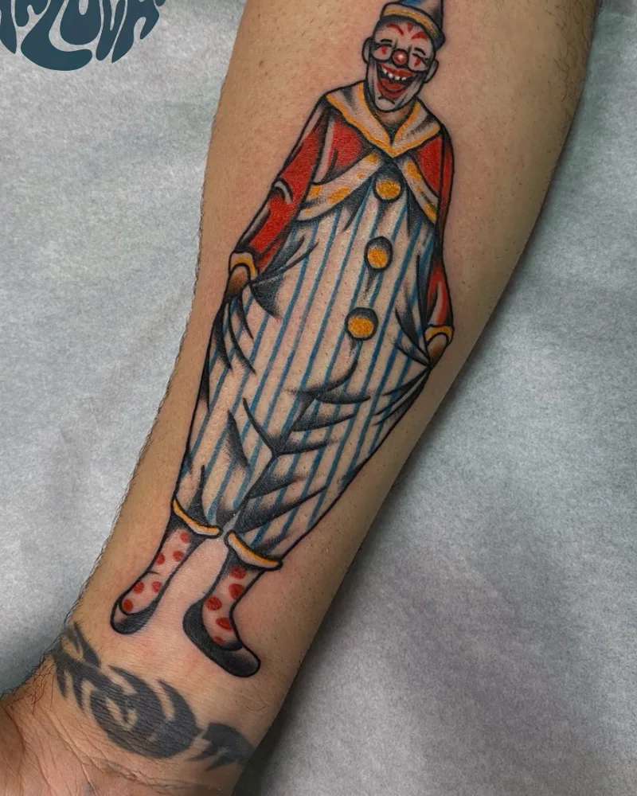
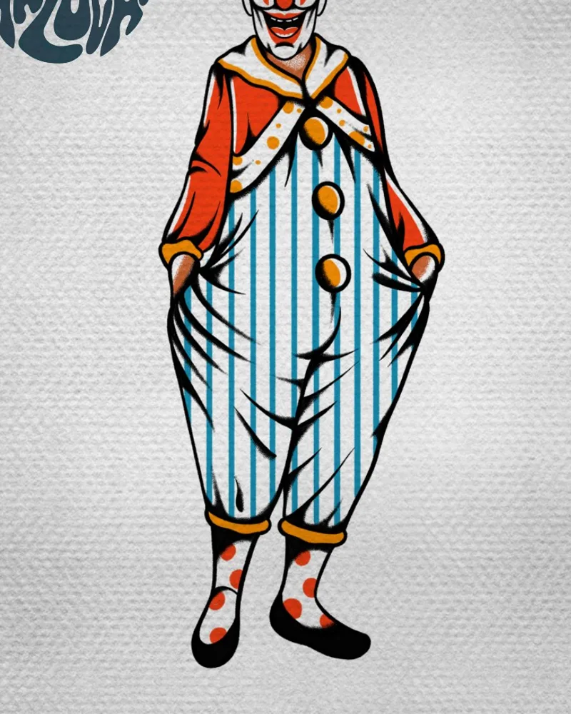
DesenhoPele
Trabalhos
Tradicional, do jeito clássico.
Traço firme, cor chapada e preto que segura. Damas, panteras, palhaços, adagas e o que mais couber na sua história.
Flash disponível
No precinho.
Desenhos prontos para tatuar, de R$ 300 a R$ 500, de 9 a 18 cm. Escolheu dois? O segundo, de mesmo valor, sai pela metade.
Gostou do desenho mas não das cores? A gente faz o mesmo flash em preto e cinza.
Serigrafia há mais de três anos, costura e modelagem há poucos meses. Bolsas, camisetas, bandeiras e cerâmica, do projeto da ilustração até a embalagem. Também por encomenda.
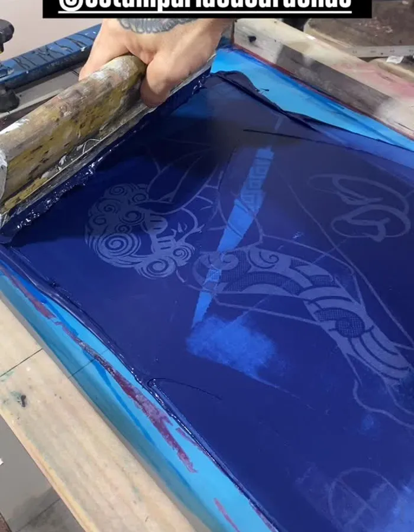
01 Puxada na tela
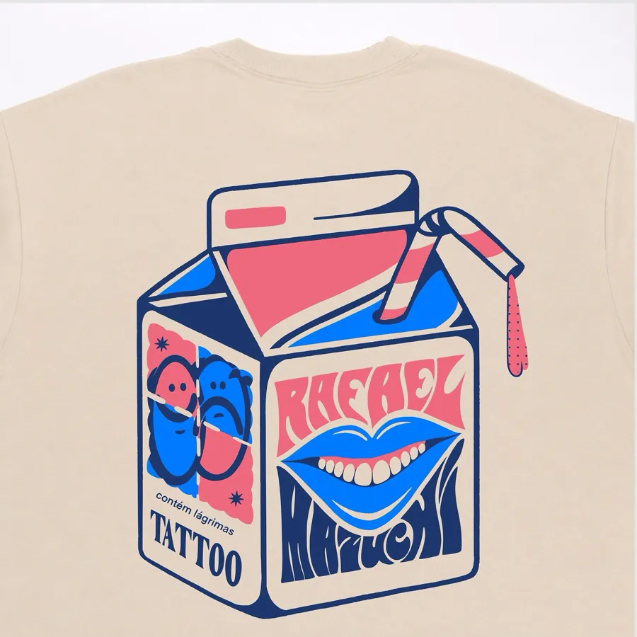
02 Camiseta serigrafada
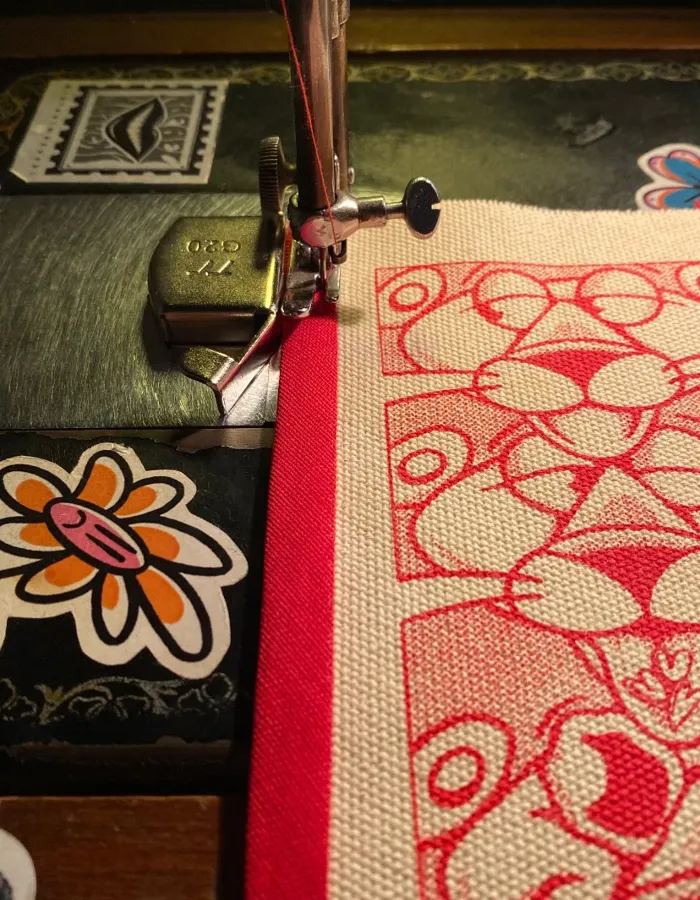
03 Molde, corte e costura
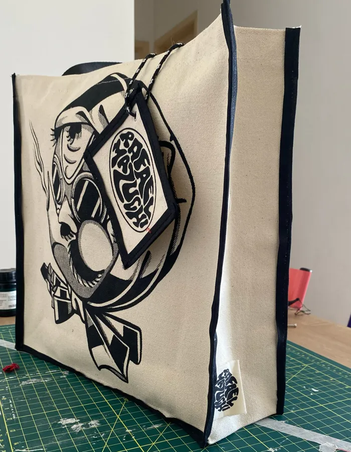
04 Tote em algodão cru
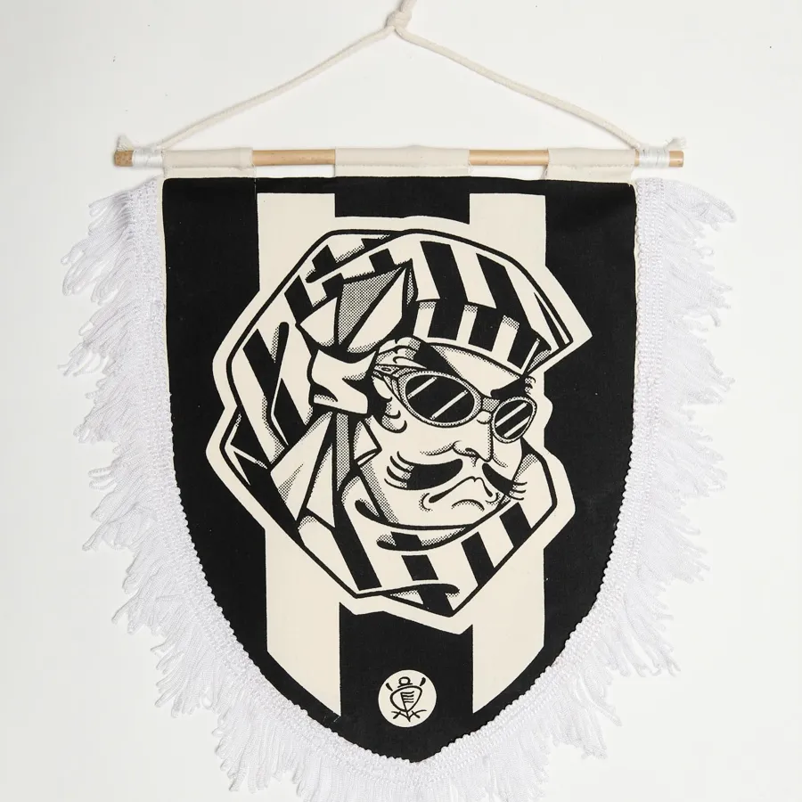
05 Flâmula com haste de bambu
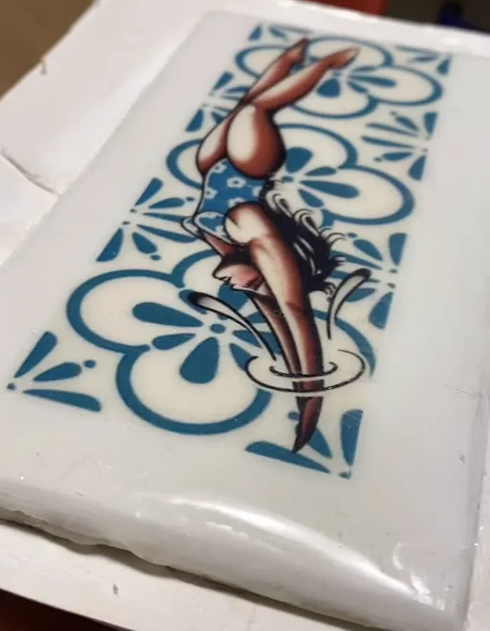
06 Cerâmica
As peças saem pela @estampariacucarachas. Quer uma bolsa, bandeira ou camiseta com sua arte? Dá pra desenrolar o projeto inteiro.
Tudo começa com a sua ideia e uma referência. Cada etapa existe para fazer o desenho funcionar na pele e no corpo de quem vai carregar.
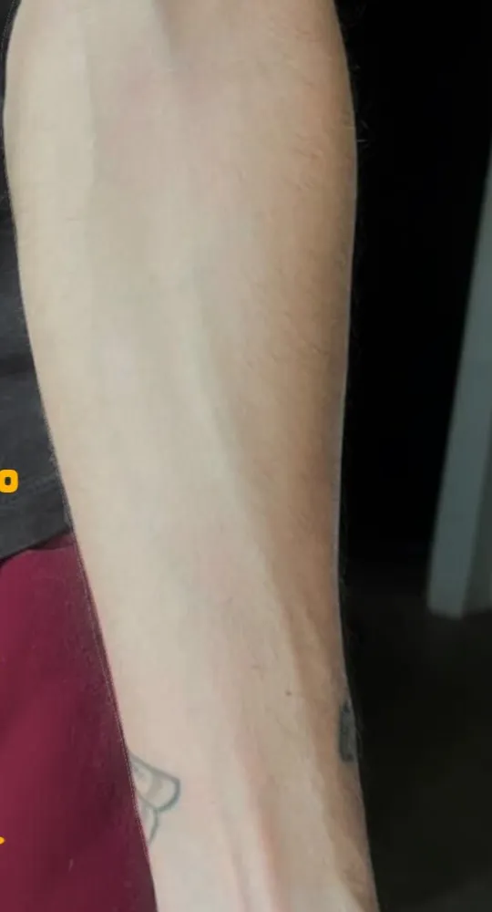
01
Entendendo a região
Você manda uma foto de onde quer tatuar. Ali eu penso no encaixe, na anatomia e no espaço disponível.
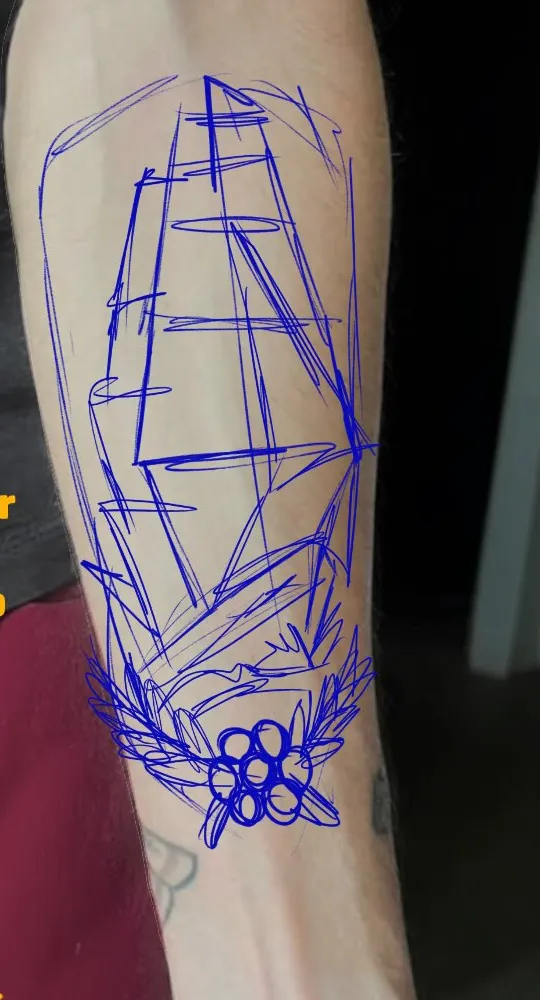
02
Esboço e estrutura
Primeiro o desenho se ajusta às formas do corpo. A estrutura vem antes de qualquer detalhe.
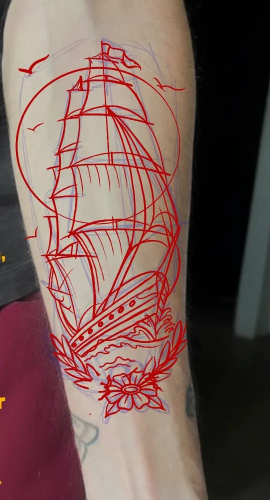
03
Refinando o esboço
Com a estrutura definida, entram formas, proporções e detalhes. O esboço vira desenho final, com traço e sombra.
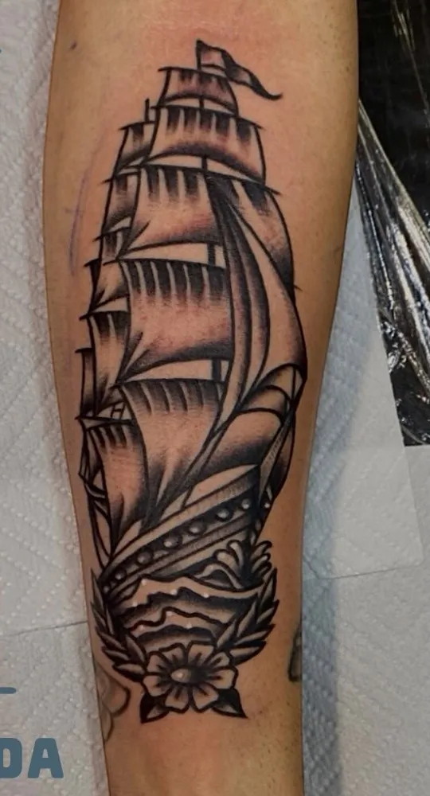
04
Na pele
Desenho aprovado, sessão marcada. A ideia vira tatuagem e vai com você pra vida toda.
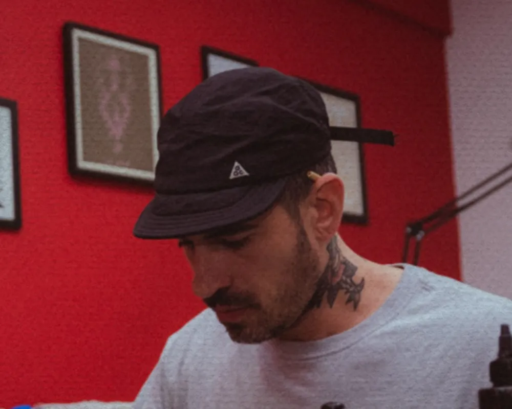
O artista
“Se tiver alguma ideia na cabeça, me dá um salve que a gente desenrola.”
Rafael Mazuchi tatua o tradicional do jeito clássico e customiza cada flash para quem vai carregar. Fora da máquina, desenha, estampa, costura e pinta cerâmica. Já teve arte na coleção Classic BR da Narina Skate, marca que fez parte da adolescência dele.
9 milseguidores acompanhando o corre
+3 anosde serigrafia feita à mão
2 flashso segundo sai pela metade
Agendar
Me dá um salve.
Preencha o básico e o pedido chega pronto no meu WhatsApp. Respondo com orçamento e datas. Agenda sempre aberta.
Orçamento sem compromisso
Flash ou desenho exclusivo
Colorida ou preto e cinza
Estúdio
São Caetano do Sul.
Av. Sen. Roberto Simonsen, 560 · sala 02 Cerâmica, São Caetano do Sul, SP CEP 09530-401